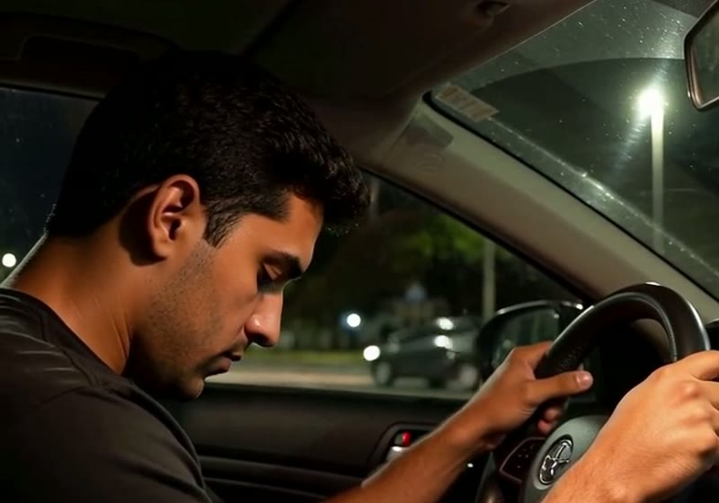
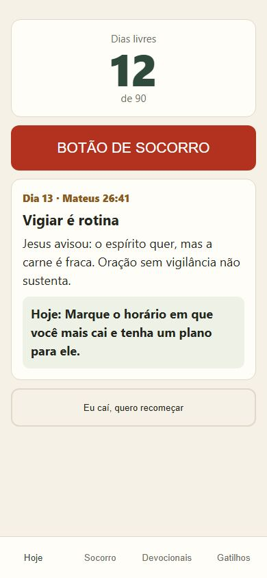
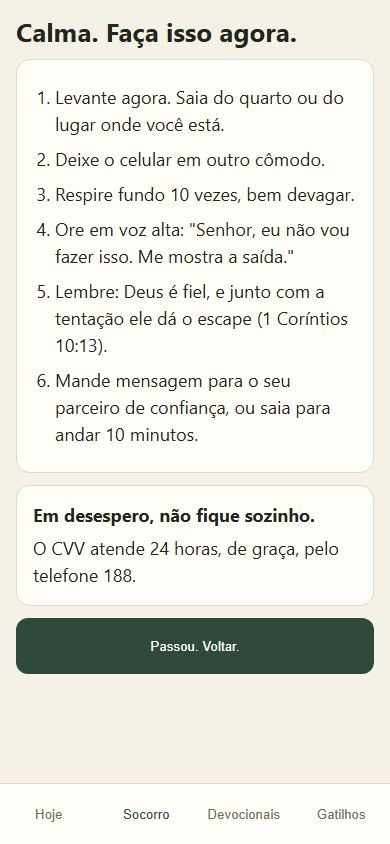
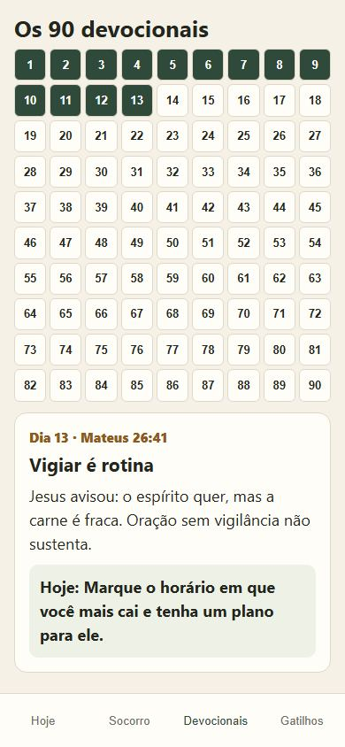
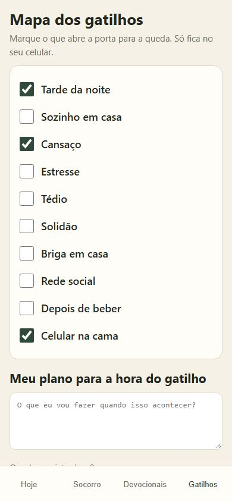

Método de 90 dias no celular para vencer o vício em pornografia, com fé e estratégia. Contador de dias, botão de socorro e um devocional por dia.
Promessa não quebra ciclo. Bloqueador não quebra ciclo. Quem cai de madrugada, sozinho, precisa de um plano diferente de quem cai depois de uma briga em casa.
Faça o teste gratuito de apenas 2 minutos e descubra onde o seu ciclo começa.
Qual é a sua idade?
Só para maiores de 18 anos. Teste grátis e sem cadastro.
0%
Caminho pronto
O que você respondeu
Onde o seu ciclo começa
Sua primeira semana
Um devocional curto por dia, com uma ação prática para fazer naquele dia.
O produto
Nada para baixar e nada para instalar. Fica salvo só no seu aparelho.




Arraste para o lado para ver as telas.
Como funciona
Por que funciona
Quem não enxerga o ciclo vai passar a vida pedindo perdão pelo mesmo pecado. O 90 Dias de Liberdade tira você do piloto automático: mostra o gatilho, coloca uma saída na sua mão e te firma na Palavra, um dia de cada vez.
O que muda
Tudo o que você recebe
Tudo isso, uma vez só:
R$ 37
Menos de R$ 0,50 por dia. Sem mensalidade.
Quero começar agoraPagamento por Pix ou cartão. Acesso na hora.
Faça o caminho por 30 dias. Se achar que não valeu, devolvemos 100% do seu dinheiro. Sem pergunta e sem enrolação.
Sendo direto
Se você quer continuar fingindo que está tudo bem, não compre. Aqui tem que abrir o jogo.
Mas se você cansou de pedir perdão pelo mesmo pecado, é aqui que começa.
Sim. Os devocionais usam a Bíblia e falam de fé, oração e domínio próprio.
O contador, o mapa e as anotações ficam salvos só no seu aparelho.
O contador zera e você recomeça no mesmo dia. A queda vira informação sobre o seu gatilho.
Não. É um apoio diário. Se a luta for pesada, procure ajuda profissional e alguém de confiança.
O acesso chega no e-mail logo depois do pagamento e abre direto no celular.
Devolvemos tudo em até 30 dias.